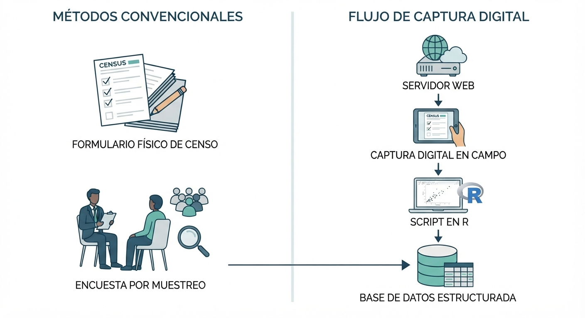
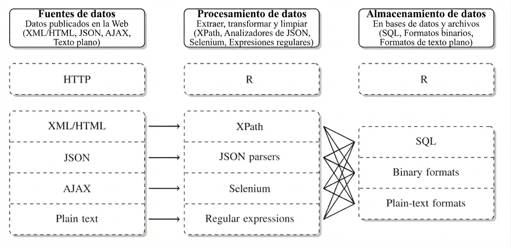

3 Adquisición de Datos en la Web: Web Scraping y APIs
3.1 Captura y Preservación de la Información
En el ámbito del análisis de datos, el primer paso crítico consiste en obtener información de calidad mediante un proceso sistemático de captura y preservación. Tradicionalmente, la estadística y la investigación social han dependido de fuentes convencionales como censos, encuestas por muestreo y registros administrativos.
Sin embargo, en el ecosistema digital moderno, la Inteligencia de Negocios y la minería de datos exigen incorporar la captura de información generada en espacios digitales, redes sociales y portales web. Este cambio metodológico demanda del analista mucha paciencia y creatividad, ya que la interacción con áreas externas y el preprocesamiento de datos crudos consumen la mayor parte del esfuerzo técnico.
La justificación de este esfuerzo radica en la naturaleza de los datos del mundo real: independientemente de su origen, la mayoría de los datos son ruidosos, inconsistentes y adolecen de valores perdidos. Por ello, aunque la recopilación en la web pueda parecer de bajo costo, la creación de datos de alta calidad mediante limpieza, estandarización e integración representa una inversión considerable para cualquier organización.

| Característica | Estudio Observacional | Registro Transaccional |
|---|---|---|
| Origen | Diseñado ex profeso (con intensión) para investigar o medir. | Generado automáticamente por una operación del día a día. |
| Intención | Analítica / Científica. | Operativa / Administrativa. |
| Intervención | El investigador diseña las preguntas o variables a medir. | El sistema registra el evento tal como sucede por necesidad operativa. |
3.2 El Ciclo de Recopilación de Información (Los 5 Pasos de Iacus)
Para evitar sesgos y garantizar que la recolección automática de información de los sitios web sea un proceso científico (Iacus et al. 2015), se debe seguir una secuencia metodológica estructurada:
[1. Definición de Necesidad] ──> [2. Identificación de Fuentes] ──> [3. Teoría de Generación]
│
[5. Toma de Decisión y Raspado] <── [4. Balance y Aspecto Legal] <──────────┘- Definición de la Necesidad de Información: Delimitar con precisión qué datos se requieren para apoyar una mejor toma de decisiones dentro del negocio.
- Identificación de Fuentes en la Web: Buscar portales digitales que contengan los atributos o propiedades requeridos para el estudio.
- Teoría del Proceso de Generación de Datos: Comprender quién genera el dato, con qué frecuencia se actualiza y qué sesgos potenciales puede contener la plataforma de origen.
- Balance de Ventajas, Desventajas y Legalidad: Evaluar la viabilidad técnica de la captura frente a las políticas de uso del portal y el archivo
robots.txtdel servidor. https://www.ejemplo.com/robots.txt - Toma de Decisión e Inicio de la Recopilación: Diseñar el script de extracción automatizada resguardando la preservación y consistencia de los datos capturados.
Instrucción: En grupos de tres estudiantes, elijan un portal de comercio electrónico o de noticias de su país.
- Definan un objetivo de negocio que requiera raspar ese sitio.
- Identifiquen si los datos que obtendrán son el resultado de un estudio observacional o un registro transaccional.
- Mencionen dos posibles inconsistencias o ruidos que esperan encontrar en la data cruda.
3.3 Fundamentos Tecnológicos de la Web: HTML y CSS
Para realizar la extracción automática de datos sin la intervención de un humano que navegue visualmente (Mitchell 2015), debemos entender el lenguaje con el que están construidas las páginas. El HTML (HyperText Markup Language) es un lenguaje de texto que se utiliza para estructurar y desplegar una página web.
HTML funciona bajo una estructura jerárquica y entornos de encapsulamiento definidos por etiquetas (tags) y atributos. Por ejemplo:
<div class="oferta" id="sucursal_la_paz">
<span class="producto">Laptop de Oficina</span>
<span class="precio">750.00 USD</span>
</div>En minería de datos, no necesitamos leer todo el código de una página. El diseño estético de la web utiliza hojas de estilo (CSS) que asignan clases (como .producto o .precio) a los elementos. Estas clases actúan como selectores o direcciones postales que le permiten a nuestro código en R extraer quirúrgicamente la información de interés.

3.4 Raspado Web Práctico en R con rvest
En R, la librería diseñada para interactuar con páginas estáticas y realizar raspado web es rvest, la cual forma parte del universo de herramientas de tidyverse. Para facilitar la identificación del selector CSS de cualquier elemento sin inspeccionar manualmente el código, se emplea la extensión de navegador SelectorGadget.
Para comenzar a trabajar con rvest, instale el paquete desde el CRAN y cárguelo en su sesión de trabajo junto con el núcleo de tidyverse:
# Instalación (se ejecuta una sola vez)
install.packages("rvest")
# Carga de librerías en la sesión actual
library(rvest)
library(dplyr)La extracción con rvest se basa en cuatro funciones secuenciales que procesan la información mediante la tubería o pipe (%>%): * read_html(): Carga y analiza la estructura jerárquica del documento HTML. * html_nodes(): Extrae los entornos específicos que coinciden con el selector CSS. * html_text(): Limpia el código de marcado y extrae únicamente el texto plano. * html_table(): Convierte tablas HTML (<table>) directamente en estructuras de datos de R (data frames).
A continuación se presenta la sintaxis estándar para estructurar texto extraído de un contenedor web:
library(rvest)
library(dplyr)
# 1. Leer el portal web de origen
url_portal <- "https://ejemplo-tienda-bolivia.com"
web_html <- read_html(url_portal)
# 2. Capturar nodos y transformarlos a un vector de texto limpio
nombres_productos <- web_html %>%
html_nodes(".producto") %>%
html_text()- Obtén la tabla de esta fuente y genera un dataframe. https://www.bcb.gob.bo/tco_reporte_detalle_historico.php?fecha=2026-08-20
- Hacer web scraping de un portal de comercio electrónico, clasificados o supermercados locales en Bolivia.
- Hacer un web scraping de una biblioteca universitaria digital en Bolivia y capturar una búsqueda de interés.
3.5 Interfaces de Programación de Aplicaciones (APIs)
Aunque el raspado web es una herramienta flexible, tiene una limitación: si el administrador de la página cambia el diseño o el nombre de las clases CSS, el código fallará. Como alternativa estructurada, existen las APIs (Application Programming Interface).
Las APIs son puertas de entrada creadas por los administradores de una página web que permiten el acceso controlado a información seleccionada en formatos amigables y altamente estructurados (como JSON o XML), aunque debido a esto no siempre contienen toda la información que el analista desea.
| Dimensión Analítica | Web Scraping Tradicional | Acceso por APIs Oficiales |
|---|---|---|
| Estabilidad | Baja (sensible a rediseños estéticos de la web) | Alta (los esquemas de datos permanecen estables). |
| Estructura | No estructurada (requiere transformaciones complejas) | Altamente estructurada (JSON, XML listos para análisis). |
| Limitaciones | Bloqueos de IP por peticiones masivas | Regulado por cuotas de acceso y claves de autenticación. |
3.5.1 Caso Práctico: Consumo de la API del Banco Mundial
La API del Banco Mundial ofrece acceso libre a más de 16,000 indicadores de series de tiempo con una cobertura histórica superior a los 50 años para la mayoría de los países. En R, no necesitamos realizar peticiones HTTP manuales para consumir esta API, ya que existe la librería especializada wbstats que encapsula las consultas de manera directa.
# Instalar y cargar la librería de acceso a la API del Banco Mundial
install.packages("wbstats")
library(wbstats)
# Buscar indicadores relacionados con el desempleo
busqueda_desempleo <- wb_search("unemployment")
# Descargar datos de desempleo para Bolivia desde el año 2000
datos_bolivia <- wb_data(
country = "BO",
indicator = "SL.UEM.TOTL.ZS",
start_date = 2000,
end_date = 2025
)- Raspado de Tipo de Cambio Oficial: Diseñe un script en R utilizando
rvestpara extraer el precio de compra y venta del dólar estadounidense, así como la fecha de actualización, desde la página oficial del Banco Central de Bolivia (https://www.bcb.gob.bo). Asegúrese de guardar los resultados en un data frame estructurado con nombres de atributos limpios. - Estructuración de Ofertas Laborales: Utilice la estructura de la plataforma Trabajópolis (https://www.trabajopolis.bo) para seleccionar un departamento de Bolivia y armar un data frame que contenga: título del empleo, empresa ofertante y salario (si está disponible). Identifique los desafíos de limpieza de texto asociados a este ejercicio.
- Análisis de Tendencias con gtrendsR: Instale la librería
gtrendsRpara consumir la API de Google Trends. Realice una consulta para evaluar en qué meses del año es más frecuente la búsqueda del término “descuentos” o “compras” en Bolivia, y comente cómo esta información apoya la analítica predictiva de una empresa de retail.